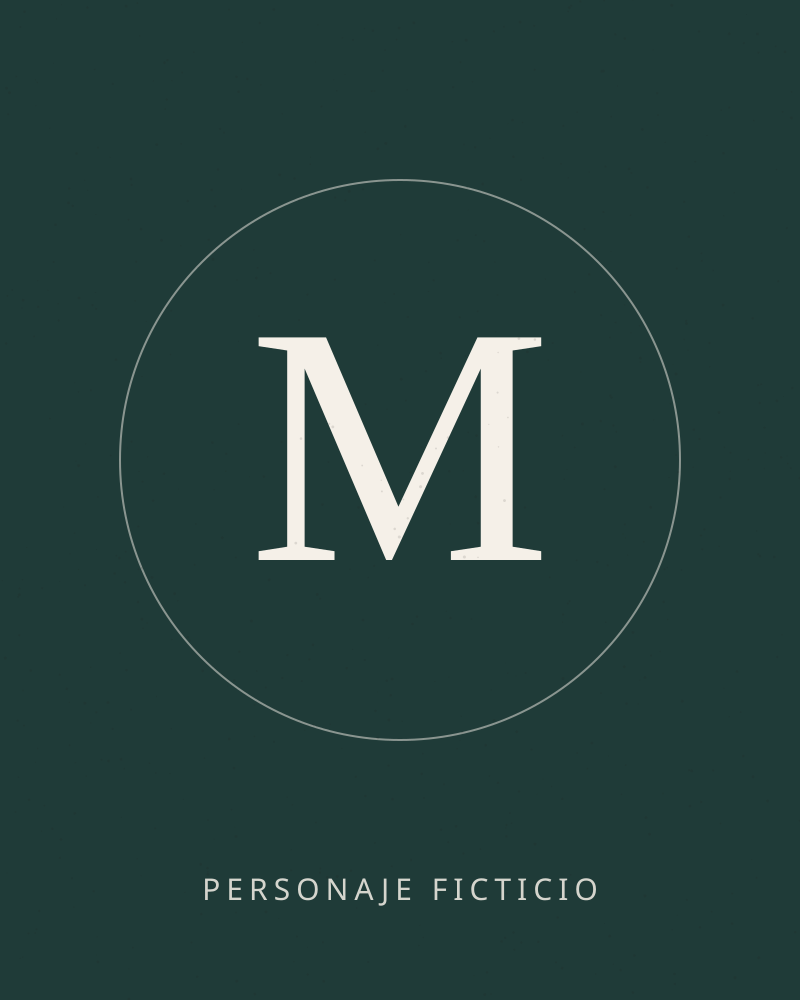
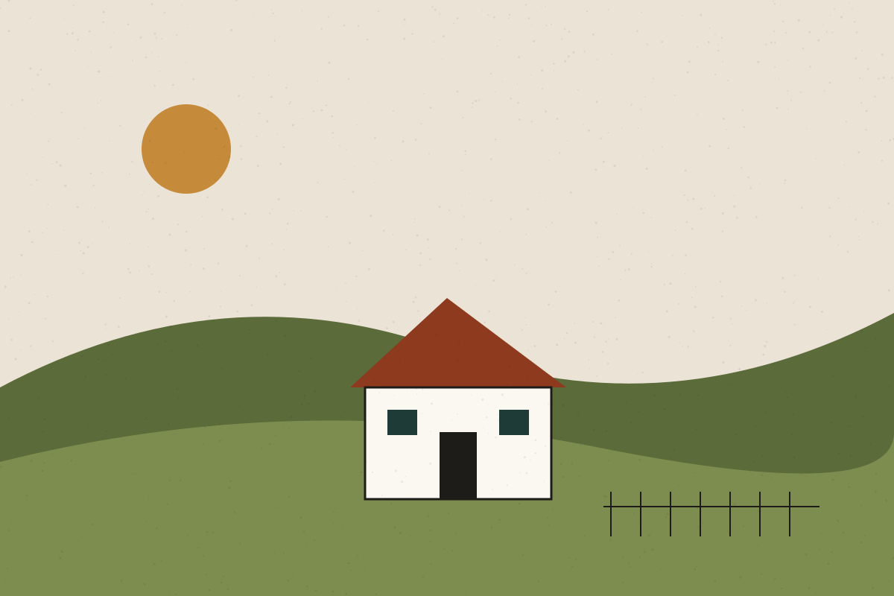
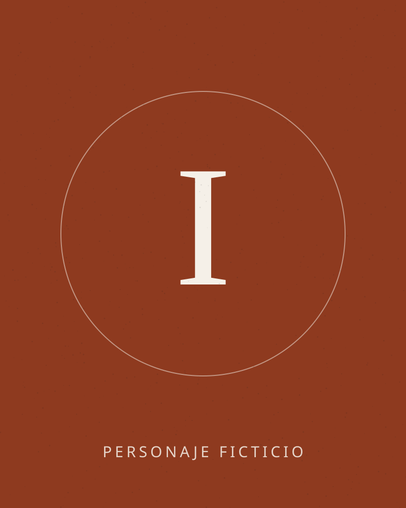
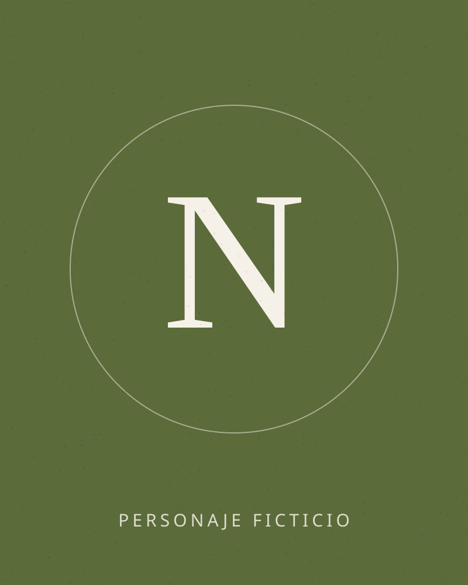
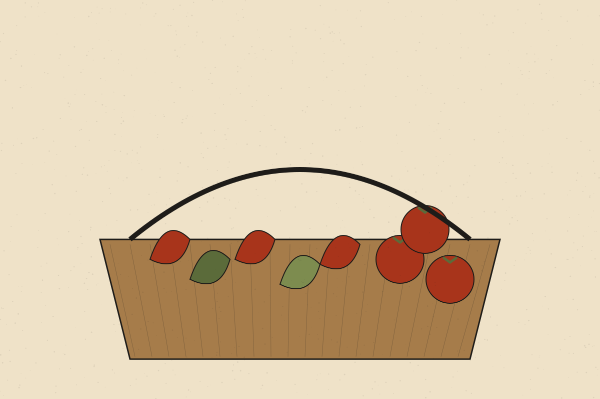

Maialen Etxeberria
Chef y cofundadora · Ficticia
Formada en cocinas de la costa, dirige la carta y el trabajo con los productores. Defiende los guisos largos y las salsas ligadas a la antigua.
La historia · Ficticia
Erreka significa «arroyo» en euskera y sukaldea, «la cocina». Un nombre sencillo para una casa pequeña. La historia, las fechas y las personas de esta página son inventadas para la demostración.
El origen
La idea nace en la cocina de un caserío, entre guisos de domingo y conservas de verano. Años después, tras pasar por cocinas de la costa y del interior, sus fundadores deciden abrir un restaurante propio con una premisa clara: cocinar lo que da el entorno, cuando lo da.
El resultado es una cocina reconocible, con raíces en el recetario vasco, que no renuncia a la técnica actual pero la mantiene en segundo plano.

Trayectoria
2019
Primeras cenas privadas en el caserío familiar para amigos y vecinos.
2022
Se cierra el acuerdo con productores de la comarca: huerta, pescado de bajura y queso de oveja.
2024
Apertura del comedor, con una carta corta que cambia cuatro veces al año.
Equipo
Personajes ficticios. En lugar de retratos se muestran monogramas, para no usar la imagen de personas reales.

Chef y cofundadora · Ficticia
Formada en cocinas de la costa, dirige la carta y el trabajo con los productores. Defiende los guisos largos y las salsas ligadas a la antigua.

Chef de brasa y cofundador · Ficticio
Responsable del fuego y de la carne. Trabaja con leña de encina y una parrilla que regula a mano.

Jefa de sala y sumiller · Ficticia
Cuida el ritmo del servicio y la bodega. Su objetivo: que cada mesa se sienta atendida sin sentirse observada.

Producto
Trabajamos con pequeños productores de la comarca. Sus nombres se publicarán cuando existan acuerdos reales; no citamos marcas ni explotaciones que no colaboran con este proyecto.